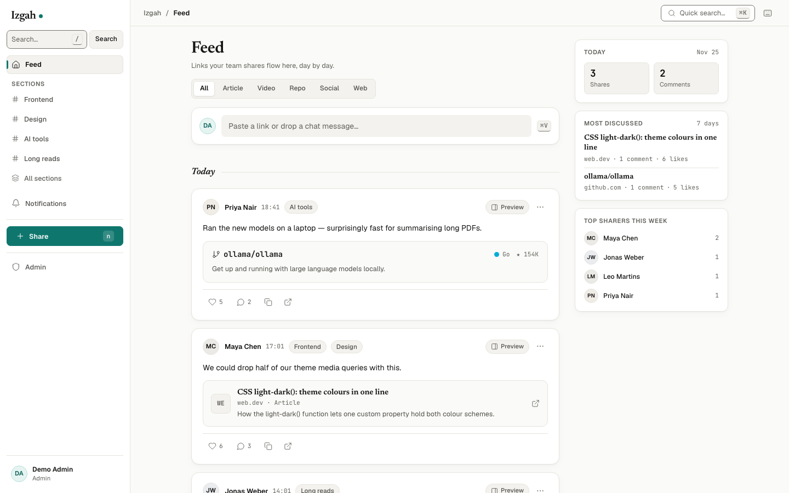
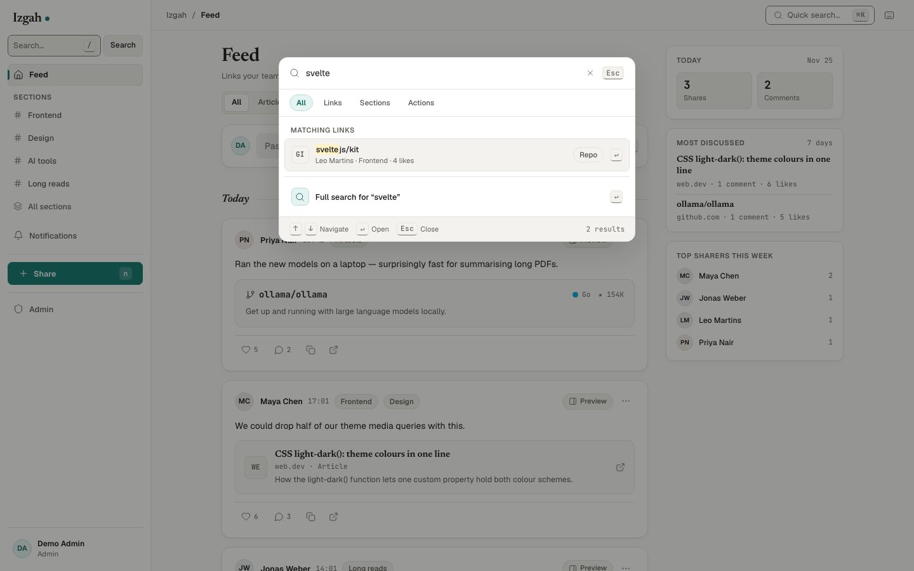

Open source · self-hosted · AGPL-3.0
Your team's shared link library
Stop losing good links in chat. Izgah gives a small team one calm place to share the videos, repositories, posts and articles it finds — then discuss them and find them again in seconds.
izgah.com only describes the project — every team runs its own instance on its own domain.

Built for a team, not for an algorithm
Izgah is deliberately small: one feed, a handful of sections, and search that actually finds things. Everything works without JavaScript, and nothing leaves your server.
-
Content-aware feed
Videos, repositories, social posts and articles get cards that fit them, with previews fetched and cached on your server.
-
Sections
Admins curate topics. A link can live in several sections, or sit quietly in a section without hitting the feed.
-
Search that finds it
Full-text search over titles, notes and URL fragments in English and Turkish, plus a ⌘K command palette.
-
Browser extensions
Share the current tab from Chrome, Firefox or Safari with Alt+Shift+I or the right-click menu.
-
Discuss in place
Likes, comments and notifications live next to each link, and duplicate shares point back to the first one.
-
Accessible by default
Light, dark, dim and high-contrast themes that meet WCAG 2.2 AA, full keyboard support, and English or Turkish UI.

Run it on your own server
One Docker container and PostgreSQL. No external e-mail, queue or cache service — invites are links your admin shares.
git clone https://github.com/gorkemio/izgah.git
cd izgah
export POSTGRES_PASSWORD='…' \
BETTER_AUTH_SECRET="$(openssl rand -hex 32)" \
ORIGIN='https://links.example.com'
docker compose -f docker-compose.prod.yml up -d --build
docker compose -f docker-compose.prod.yml exec app \
node build/cli.js create-admin --email you@example.com --name "You"- Point a domain at your server and put Caddy, Traefik or Nginx in front for HTTPS.
- Start the stack with the compose file; migrations run automatically.
- Open the invite link the CLI prints, set your password and invite your team.
-
Pick your defaults with
DEFAULT_LOCALE,APP_TIME_ZONEandINSTANCE_NAME.
Step-by-step guides for Docker Compose + Caddy and Dokploy live in the repository.
One extension for every instance
Install the Izgah extension, open its options and enter your team's address and a personal API key from Settings → API keys. The extension asks for no access to other sites and sends links only to the server you chose. How the extensions work.